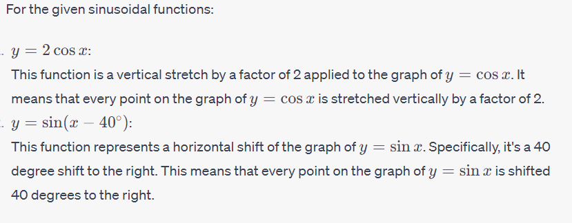
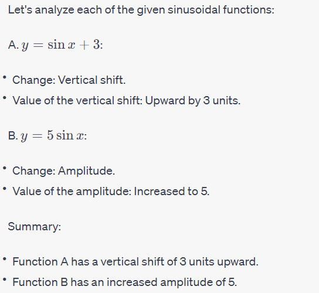

Show Answer |
Solution:  |
|
|
Each sinusoidal function below has undergone one transformation that has affected either the period, amplitude, or equation of the axis. In each case, determine which characteristic has been changed and indicate its value.
A. y= sin x+ 3 B. y = 5 sin x Show Answer |
 |